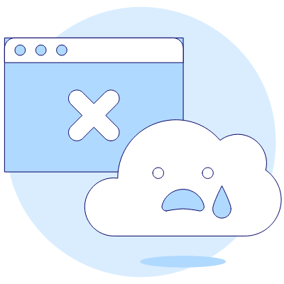

<ion-header [translucent]="true">
  <ion-toolbar>
    <ion-title>Página no encontrada</ion-title>
  </ion-toolbar>
</ion-header>

<ion-content class="ion-padding">

  

  <ion-button [routerLink]="['/home']" expand="block" class="ion-margin-top">
    Regresar
  </ion-button>
</ion-content>

